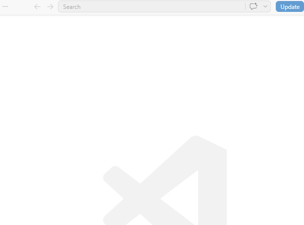
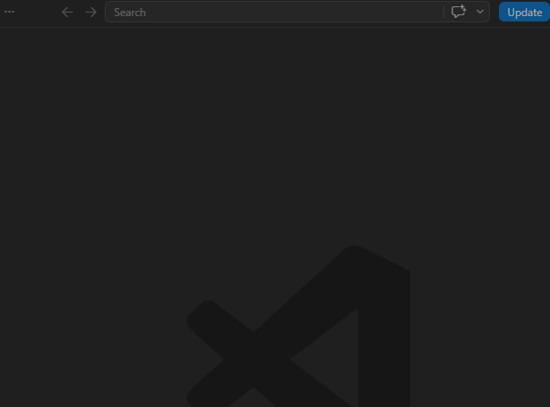
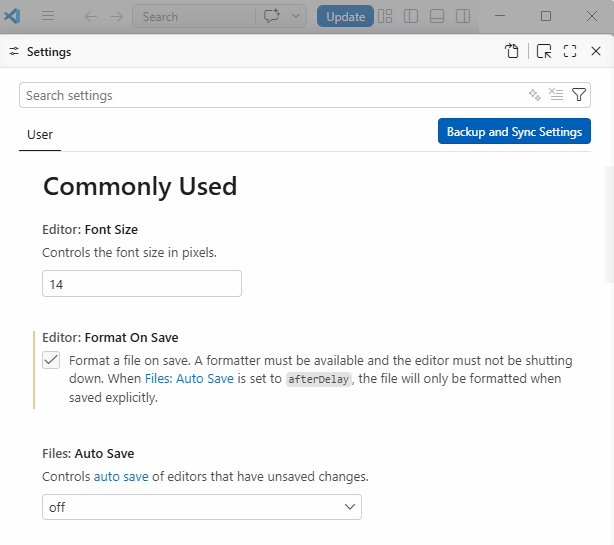
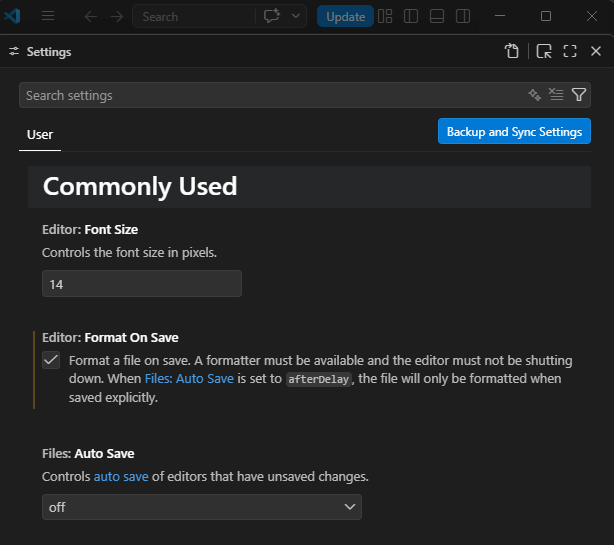
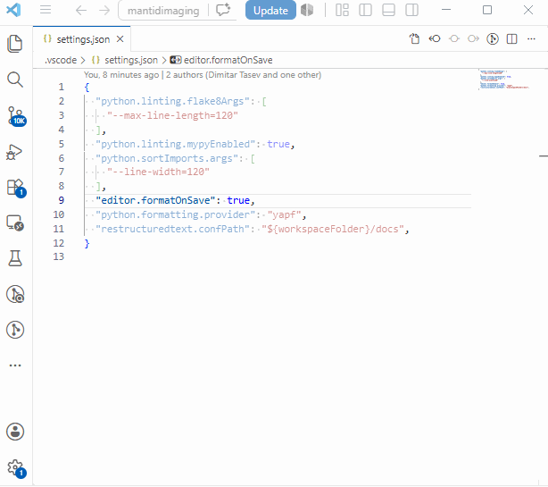
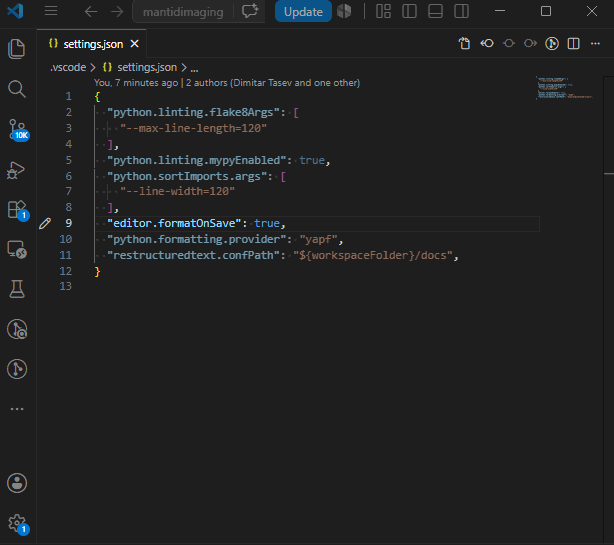

VSCode#
Overview#
This page is aimed at developers who use Visual Studio Code (VSCode) as their Integrated development environment (IDE) for Mantid Imaging development.
It includes:
Configuring VSCode for Python development
Enabling auto-saving
Disabling auto-formatting on save
How-to Guides#
How to open and prepare VSCode for Mantid Imaging development#
Prerequisites#
Before starting, ensure you have:
An installed copy of VSCode
A clone of the Mantid Imaging repository
A configured Mantid Imaging developer environment (See Getting Started guide)
Opening the project#
Open VSCode
Click File -> Open Folder
Navigate to your Mantid Imaging source directory and select it
For code editing you are good to go! You can open any file from the left sidebar and start editing.
Selecting the Python interpreter#
Open the Command Palette ⌘+Shift+P Ctrl+Shift+P Ctrl+Shift+P and search for
Python: Select InterpreterChoose the Python environment that corresponds to your Mantid Imaging development setup i.e,
mantidimaging-devor the path similar to"...\\AppData\\Local\\miniforge3\\envs\\mantidimaging-dev\\python.exe"
{kind=link}

Selecting the Python interpreter in VSCode#
{kind=link}

Selecting the Python interpreter in VSCode#
Verify that the selected interpreter is correct by opening a python file and checking the bottom right corner of VSCode, it should display the name of the selected environment.
If you are using Pixi, the interpreter may be detected automatically from the .pixi folder in the project root. In that case, the Pixi environment will appear as something like:
Python 3.12.12 (dev) ./.pixi/envs/dev/bin/python
More details on configuring Pixi with VS Code can be found here.
How to enable auto-save#
VSCode has an auto-saving feature that can be enabled to automatically save changes based on predefined conditions. This can help prevent data loss and ensure that changes are saved regularly without the need for manual intervention.
This built in feature can be enabled by:
Open the File -> Preferences -> Settings menu
Search for “Auto Save”
Select the preferred auto save option. It is recommended to use
onFocusChangeas it will save the file whenever the editor loses focus, which can help prevent data loss while working on multiple files.
{kind=link}

Enabling auto-save in VSCode#
{kind=link}

Enabling auto-save in VSCode#
How to disable auto-format on save#
VS Code stores its formatting configuration in a settings.json file. Among these settings is editor.formatOnSave, which is responsible for automatically formatting code each time a file is saved.
The auto-formatting feature can be disabled by:
Locate the
settings.jsonfile located under the.vscodefolder in the project root.Open the file and search for the setting
editor.formatOnSave. If it is set totrue, change it tofalseto disable auto-formatting on save.
{kind=link}

Disabling auto-format on save in VSCode#
{kind=link}

Disabling auto-format on save in VSCode#
See Also#
VSCode Extensions - A list of required and recommended extensions for VSCode that can enhance the development experience.
Keybindings - Commonly used keyboard shortcuts in VSCode for efficient coding and navigation.
How to debug Python tests - A guide on how to set up and use the debugger in VSCode for Python development.